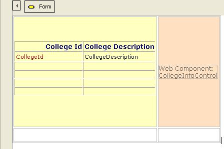
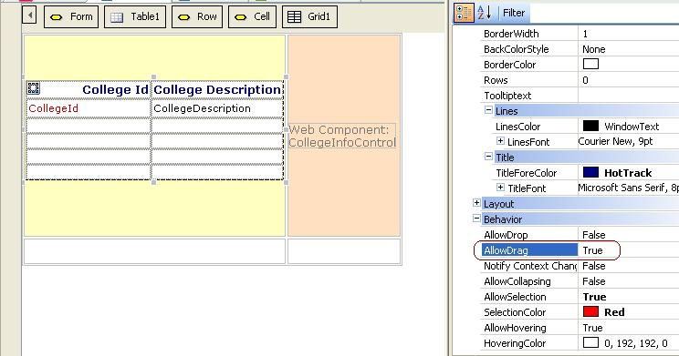

Consider a web page of the university site application where a grid displays all the colleges of the university. To view additional information of each college, the user can drag a row of the grid to a "web container" which loads that information automatically. In GeneXus terms, that "web container" is a Web Component control (X Evolution 3) which is dynamically created according to the college dragged to it. 1. Create a Web Panel object named "ViewCollege" with the following controls in its form:
 2. Create also a "CollegeInfo" Web Component which displays the college information, and has the following rule: parm(CollegeId); 3. In the "ViewCollege" web panel configure the "Allow Drag" property of the "Colleges" grid to True:  4. In the "ViewCollege" web panel code the following "Drop Event". Note that the Web Component is created each time a row of the grid is dragged to the area where the Web Component is drawn in the form. The "in" parameters of the "Drop Event" are CollegeId, and CollegeDescription (the attributes loaded by the grid): Event collegeInfoControl.Drop(&CollegeId,&CollegeDescription) collegeInfoControl.Object = CollegeInfo.Create(&CollegeId) EndEvent See AlsoDrag and Drop in Web Applications
|
| Backlinks | |
| Drag and Drop in Web Applications | Drop event in Web |